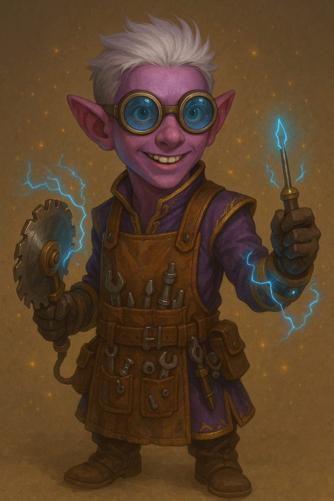

Personagens de todas as Aventuras
Curse of Strahd
Thalindor, o Ranger Vampiro
Thalindor, o elfo ranger, mostrou-se um estrategista nato e um protetor habilidoso em momentos críticos de sua jornada em Baróvia:
- Sessão 1: Auxiliou na análise do mapa de Baróvia, identificando pontos estratégicos para futuras explorações.
- Sessão 3: Guiou o grupo até o cemitério de Baróvia, evitando emboscadas de lobos e garantindo segurança para o enterro de Kolyan Indirovich.
- Sessão 5: Investigou o lago Zarovich e descobriu pistas importantes sobre Anna Krezkova e a conexão com Strahd.
- Sessão 7: Realizou disparos precisos contra as crias vampíricas durante a defesa da igreja de São Andral, protegendo os aldeões.
- Sessão 8: Liderou o reconhecimento das ruas de Vallaki antes da revolução, permitindo que o grupo se movesse com segurança durante o caos.
- Sessão 9: Usou suas habilidades de sobrevivência para encontrar uma rota de fuga alternativa do Castelo Ravenloft, caso o grupo fosse encurralado.
Thalindor une estratégia e bravura, sendo uma peça indispensável no grupo, especialmente em momentos que exigem precisão e conhecimento do terreno.
Arnaldo, o Bardo Licantropo
Arnaldo, o vibrante bardo humano, destacou-se como a alma do grupo, trazendo carisma e inspiração em momentos cruciais de sua jornada em Baróvia:
Arnaldo é o coração do grupo, combinando música, eloquência e carisma para manter a moral alta e garantir que seus aliados nunca percam a esperança em meio às trevas de Baróvia.
Harien Butico - O Guardião da Luz
Harien Butico
Nome do Jogador: Victor Hugo
Raça: Aasimar
Classe: Clérigo
Descrição: Harien Butico Solaris é filho do lendário Chico Butico, conhecido por todo o reino pelo famoso estabelecimento de sua família: o Fura Coco. Carregando o nome e a honra dos Butico, Harien parte em uma jornada sagrada com dois grandes objetivos: aprimorar os dons clericais herdados de seu pai — o aclamado Clérigo Supremo — e expandir o império do Fura Coco para além das fronteiras.
Com um coração cheio de fé, ambição e um propósito secreto confiado por Chico Butico, Harien busca se tornar tão grandioso quanto o Primeiro Butico, alcançando um dia o patamar dos próprios deuses.
Como clérigo do grupo, Harien é o farol de esperança e cura. Sua fé inabalável tem sido crucial para manter viva a chama da esperança em meio às trevas de Baróvia, guiando seus companheiros com luz e determinação.
Com devoção e poder sagrado, o clérigo é a âncora espiritual que guia e protege seus aliados na escuridão implacável de Baróvia.
Erasmus, o Ladino Pálido
Erasmus, o Ladino Pálido (Viktor)
Nome do Jogador: Thiago (Thigas / Thy / Bigas)
Raça: Dhampir
Classe: Ladino
Pela primeira vez, a verdadeira história de Erasmus é revelada. Veja o story book ilustrado que mostra os sacrifícios, as batalhas e os segredos de um dos maiores heróis de Neverwinter: Clique Aqui
Descrição: Erasmus, também conhecido como Viktor "O Ladino Pálido", é um dhampir mestre das sombras e da furtividade. Sua agilidade, astúcia e habilidade com adagas têm sido cruciais para o sucesso e a sobrevivência do grupo nas perigosas terras de Baróvia. De temperamento calculista e olhar frio, Viktor sabe explorar as fraquezas de seus inimigos e se mover entre as sombras sem ser detectado.
Apesar do passado misterioso e da natureza meio vampírica, sua lealdade ao grupo é firme, e sua sagacidade tem ajudado a desvendar os segredos sombrios de Curse of Strahd, mantendo os companheiros um passo à frente das trevas.

Porronto, O destemido
Porronto Runaférrea, o Eco da Redenção
Nome do Jogador: Peu
Raça: Gnomo da Floresta
Classe: Mago
Descrição: Porronto nasceu no coração dos Bosques Sussurrantes, numa vila gnômica fundada por seu avô, Mordenkainen, que desapareceu misteriosamente. Essa vila foi protegida por séculos por tradições mágicas e uma profunda conexão com o mundo natural. Jovem prodígio, Porronto destacou-se por sua curiosidade insaciável e engenhosas invenções mágicas, sendo um guardião da paz, mas também um espírito inquieto, sempre buscando algo além dos limites de seu lar.
A paz foi destruída quando Maltraxis, um mago das sombras, atacou sua vila, aprisionando seu povo e deixando Porronto sozinho entre as ruínas. Jurou encontrá-los, custe o que custar. Ao encontrar um grimório infernal, fez um pacto desesperado com Zal'kareth, um diabo, ganhando poder mas pagando um preço amargo, com corrupção e destruição. Depois de perceber o custo do pacto, Porronto rejeitou o diabo e busca agora redenção, combatendo com suas próprias forças e aprendizados, espalhando esperança e buscando salvar seu povo de forma justa.
Porronto é uma chama na escuridão, enfrentando seus próprios demônios enquanto luta para provar que mesmo os que falham podem encontrar um novo caminho.
Porronto combina inteligência, curiosidade e poder mágico, provando ser uma peça fundamental no grupo contra as forças da Baróvia.


Makar "Mata-Ursos"
Makar "Mata-Ursos"
Nome do Jogador: Pedro Neiva
Raça: Golias
Classe: Bárbaro
Descrição: Makar, da vida à Elaukane, mais conhecido como Makar ,um imponente golias de 2,40m de altura, com pele cinza escurecida como chumbo, cabelo em moicano curto e barba fechada. Seu peitoral exibe grandes cicatrizes de garras de urso, testemunho das batalhas que enfrentou. Veste roupas aparentemente feitas por ele mesmo e uma capa feita de pele de urso, símbolo de uma lendária vitória. Empunha um machado adornado que pertenceu a seu pai antes de um desastre que marcou sua vida.
Conhecido por sua bravura e força, Makar é um líder nato em combates intensos na Baróvia, enfrentando criaturas temíveis e protegendo seus aliados com determinação incomparável.
Feitos Memoráveis
- Enfrentou e derrotou criaturas imponentes usando seu machado adornado.
- Demonstrou bravura ao liderar o grupo em combates cruciais.
- Carrega a capa de pele de urso que simboliza sua vitória em uma batalha lendária.
- Salvou aliados em momentos críticos com sua força e coragem.
Sua história inspira o grupo, refletindo a resiliência necessária para sobreviver às adversidades de Ravenloft.
O Conto do Dragão Vermelho
Mestre Chan Shifu, O Monge
Mestre Chan Shifu
Nome do Jogador: Victor (Vitu)
Raça: Humano
Classe: Monge
Descrição: Nascido no isolado e sereno Monastério da Água do Norte, Chan Shifu foi moldado desde jovem pela disciplina do Kung Fu e pela busca da reflexão profunda. Durante décadas, ele seguiu os preceitos de seus mestres com devoção, até que um evento não revelado — e ainda hoje mal digerido — o levou à expulsão do templo.
Desde então, Chan vagou pelas Terras Intermédias, um andarilho errante com os punhos sempre prontos e a garrafa nunca muito longe. Ele enfrentou o mundo com sabedoria torta, conselhos enigmáticos e uma personalidade amarga temperada por um senso de justiça silencioso.
Hoje, aos 70 anos, Mestre Chan finalmente encontrou a tão buscada paz interior — ou algo próximo disso. Apesar de seu jeito sarcástico e respostas que soam mais como charadas do que ensinamentos, há bondade verdadeira em seu coração. Ele é um sobrevivente da alma e do corpo, um velho mestre que ainda tem muito a ensinar... mesmo que nem sempre pareça.
Mol'el Stars, O Gnomo da Floresta Artificer
Mol'el Stars
Nome do Jogador: Thiago (Thigas / Thy / Bigas)
Raça: Gnomo da Floresta
Classe: Artífice
Descrição: Mol'el Stars é um pequeno gnomo de pele roxa, sempre equipado com óculos de proteção e uma máscara de solda que refletem seu espírito inventivo e atento aos detalhes. Veste-se com roupas típicas de artesão e carrega um bracelete tecnomágico, símbolo de sua especialização em fundir magia e tecnologia.
Thorin Morgran - FALTA FAZER
Thorin Morgran
Nome do Jogador: Guilherme Luiz
Raça: Anão da Colina
Classe: Clérigo do Domínio da Luz
Descrição:
Olivando Erebor, Mago Humano
Olivando Erebor
Nome do Jogador: Vinicius (Vini)
Raça: Humano
Classe: Mago
Descrição:
Olivando Erebor é um jovem humano de 18 anos que iniciou sua jornada arcana como aprendiz do misterioso mago gnomo Porronto Runaférrea. Antes da partida de Porronto para a sombria Baróvia, Erebor aprendeu o básico das artes arcanas com ele. Apesar de Porronto raramente falar sobre seu passado, revelou que sua família havia sido levada por um mago extremamente poderoso e maligno, cujo nome permaneceu em segredo.
Erebor carrega no braço uma runa-tatuagem com o símbolo da família Runaférrea — um elo mágico aconselhado por Porronto como medida de proteção. Caso esteja em perigo, bastaria tocar a runa e pronunciar “Runaférrea” para que seu antigo mestre receba o sinal. Esse elo marca não apenas sua ligação mágica, mas também o profundo laço de confiança entre mestre e aprendiz.
Mith Varloc
Mith Varloc
Nome do Jogador: Davi
Raça: Meio-orc
Classe: Bárbaro
Descrição:
Prisioneira 13
Mol'el Stars, O Gnomo da Floresta Artificer
Mol'el Stars
Nome do Jogador: Thiago (Thigas / Thy / Bigas)
Raça: Gnomo da Floresta
Classe: Artífice
Descrição: Mol'el Stars é um pequeno gnomo de pele roxa, sempre equipado com óculos de proteção e uma máscara de solda que refletem seu espírito inventivo e atento aos detalhes. Veste-se com roupas típicas de artesão e carrega um bracelete tecnomágico, símbolo de sua especialização em fundir magia e tecnologia. Após suas aventuras com seus novos companheiros, especialmente a missão em Fim da Farra, Mol'el permanece desaparecido — seu paradeiro é um mistério, assim como os segredos que talvez ainda carrega.
Mestre Chan Shifu, O Monge
Mestre Chan Shifu
Nome do Jogador: Victor (Vitu)
Raça: Humano
Classe: Monge
Descrição: Nascido no isolado e sereno Monastério da Água do Norte, Chan Shifu foi moldado desde jovem pela disciplina do Kung Fu e pela busca da reflexão profunda. Durante décadas, ele seguiu os preceitos de seus mestres com devoção, até que um evento não revelado — e ainda hoje mal digerido — o levou à expulsão do templo.
Desde então, Chan vagou pelas Terras Intermédias, um andarilho errante com os punhos sempre prontos e a garrafa nunca muito longe. Ele enfrentou o mundo com sabedoria torta, conselhos enigmáticos e uma personalidade amarga temperada por um senso de justiça silencioso.
Hoje, aos 70 anos, Mestre Chan finalmente encontrou a tão buscada paz interior — ou algo próximo disso. Apesar de seu jeito sarcástico e respostas que soam mais como charadas do que ensinamentos, há bondade verdadeira em seu coração. Ele é um sobrevivente da alma e do corpo, um velho mestre que ainda tem muito a ensinar... mesmo que nem sempre pareça.
Após os eventos no Inn Plain Sight, e com a formação de um novo grupo de aventureiros, Chan Shifu começou a sentir-se mais vivo — como se uma nova fase estivesse se iniciando em sua jornada. As experiências compartilhadas durante a missão em Fim da Farra, especialmente ao lado de Mol'el Stars, reacenderam em Chan um laço que há muito ele não sentia: a fraternidade.
Mas desde a batalha final... Mol'el desapareceu. E Shifu, silenciosamente, carrega o peso desse mistério. Ele pouco fala sobre o que realmente aconteceu naquele confronto, guardando para si fragmentos de culpa e perguntas não respondidas. Onde está Mol'el? O que aconteceu com ele?
Agora, além dos fantasmas de seu passado monástico, Chan se vê assombrado por traições mais recentes: dois de seus antigos companheiros — seu velho aprendiz e o próprio Mol'el Stars — parecem ter seguido caminhos obscuros. Ainda é cedo para saber a verdade... mas para Chan, a estrada à frente não é apenas uma jornada externa: é uma travessia interna, entre perdão, perda e propósito.
Olivando Erebor, Mago Humano
Olivando Erebor
Nome do Jogador: Vinicius (Vini)
Raça: Humano
Classe: Mago
Descrição:
Olivando Erebor é um jovem humano de 18 anos que iniciou sua jornada arcana como aprendiz do misterioso mago gnomo Porronto Runaférrea. Antes da partida de Porronto para a sombria Baróvia, Erebor aprendeu o básico das artes arcanas com ele. Apesar de Porronto raramente falar sobre seu passado, revelou que sua família havia sido levada por um mago extremamente poderoso e maligno, cujo nome permaneceu em segredo.
Erebor carrega no braço uma runa-tatuagem com o símbolo da família Runaférrea — um elo mágico aconselhado por Porronto como medida de proteção. Caso esteja em perigo, bastaria tocar a runa e pronunciar “Runaférrea” para que seu antigo mestre receba o sinal. Esse elo marca não apenas sua ligação mágica, mas também o profundo laço de confiança entre mestre e aprendiz.
Thorin Morgran - FALTA FAZER
Thorin Morgran
Nome do Jogador: Guilherme Luiz
Raça: Anão da Colina
Classe: Clérigo do Domínio da Luz
Descrição:
Sombras de NeverNeath
Mol'el Stars
Mol'el Stars
Nome do Jogador: Thiago (Thigas / Thy / Bigas)
Raça: Gnomo da Floresta
Classe: Artífice
Descrição:
Mol'el Stars é um pequeno gnomo de pele roxa, sempre equipado com óculos de proteção e uma máscara de solda que refletem seu espírito inventivo e atento aos detalhes. Veste-se com roupas típicas de artesão e carrega um bracelete tecnomágico, símbolo de sua especialização em fundir magia e tecnologia. Após suas aventuras com seus novos companheiros, especialmente a missão em Fim da Farra, Mol'el permanece desaparecido — seu paradeiro é um mistério, assim como os segredos que talvez ainda carrega.
Porém, durante o colapso de Neverneath, retornou no momento exato, surgindo de um portal de energia pura. Silencioso, preciso e com um olhar diferente, salvou os heróis de um destino fatal ao redirecionar um feixe arcano com seu escudo. Desde então, paira uma dúvida entre seus aliados: Mol'el voltou... mas será que voltou inteiro?
Mestre Chan Shifu
Chan Shifu
Nome do Jogador: Victor (Vitu)
Raça: Humano
Classe: Monge
Descrição: Nascido no isolado e sereno Monastério da Água do Norte, Chan Shifu foi moldado desde jovem pela disciplina do Kung Fu e pela busca da reflexão profunda. Durante décadas, ele seguiu os preceitos de seus mestres com devoção, até que um evento não revelado — e ainda hoje mal digerido — o levou à expulsão do templo.
Desde então, Chan vagou pelas Terras Intermédias, um andarilho errante com os punhos sempre prontos e a garrafa nunca muito longe. Ele enfrentou o mundo com sabedoria torta, conselhos enigmáticos e uma personalidade amarga temperada por um senso de justiça silencioso.
Hoje, aos 70 anos, Mestre Chan finalmente encontrou a tão buscada paz interior — ou algo próximo disso. Apesar de seu jeito sarcástico e respostas que soam mais como charadas do que ensinamentos, há bondade verdadeira em seu coração. Ele é um sobrevivente da alma e do corpo, um velho mestre que ainda tem muito a ensinar... mesmo que nem sempre pareça.
Após os eventos no Inn Plain Sight, e com a formação de um novo grupo de aventureiros, Chan Shifu começou a sentir-se mais vivo — como se uma nova fase estivesse se iniciando em sua jornada. As experiências compartilhadas durante a missão em Fim da Farra, especialmente ao lado de Mol'el Stars, reacenderam em Chan um laço que há muito ele não sentia: a fraternidade.
Mas desde a batalha final... Mol'el desapareceu. E Shifu, silenciosamente, carrega o peso desse mistério. Ele pouco fala sobre o que realmente aconteceu naquele confronto, guardando para si fragmentos de culpa e perguntas não respondidas. Onde está Mol'el? O que aconteceu com ele?
Agora, além dos fantasmas de seu passado monástico, Chan se vê assombrado por traições mais recentes: dois de seus antigos companheiros — seu velho aprendiz e o próprio Mol'el Stars — parecem ter seguido caminhos obscuros. Ainda é cedo para saber a verdade... mas para Chan, a estrada à frente não é apenas uma jornada externa: é uma travessia interna, entre perdão, perda e propósito.
Chan Shifu, acreditava ter encontrado a paz — até reencontrar a guerra nas sombras de Neverneath. Após sobreviver ao desaparecimento de Mol'el em Fim da Farra, enfrentou horrores arcanos e espectros ao lado de antigos e novos companheiros. No coração do labirinto, lutou para proteger Mako e os demais, usando até um pergaminho de Revivificar para salvar a vida do aliado. Agora, carrega o peso da responsabilidade, dos segredos e de velhas feridas que nunca cicatrizaram.
Olivando Erebor
Olivando Erebor
Nome do Jogador: Vinicius (Vini)
Raça: Humano
Classe: Mago
Descrição:
Olivando Erebor é um jovem humano de 18 anos que iniciou sua jornada arcana como aprendiz do misterioso mago gnomo Porronto Runaférrea. Antes da partida de Porronto para a sombria Baróvia, Erebor aprendeu o básico das artes arcanas com ele. Apesar de Porronto raramente falar sobre seu passado, revelou que sua família havia sido levada por um mago extremamente poderoso e maligno, cujo nome permaneceu em segredo.
Erebor carrega no braço uma runa-tatuagem com o símbolo da família Runaférrea — um elo mágico aconselhado por Porronto como medida de proteção. Caso esteja em perigo, bastaria tocar a runa e pronunciar “Runaférrea” para que seu antigo mestre receba o sinal. Esse elo marca não apenas sua ligação mágica, mas também o profundo laço de confiança entre mestre e aprendiz.
Olivando Erebor demonstrou inteligência e coragem nos subterrâneos de Neverneath. Identificou fragmentos arcanos, negociou com micônides e, por fim, tocou o Cetro do Guardião. O preço foi alto: seu braço foi corrompido e seu olho esquerdo ficou cego após uma visão apocalíptica. Ainda assim, completou o ritual de purificação com Thoric, e hoje carrega tanto poder quanto cicatrizes. A runa dos Runaférrea ainda brilha em seu braço — mas será proteção, ou um chamado de algo maior?
Thorin Morgran - FALTA FAZER
Thorin Morgran
Nome do Jogador: Guilherme Luiz
Raça: Anão da Colina
Classe: Clérigo do Domínio da Luz
Descrição: Thorin Morgran serviu com honra nas primeiras fases da missão, ao lado de Erebor na Casa do Conhecimento. Mas, antes da descida a Neverneath, foi convocado por Dagult Brasanunca para uma crise de fé em Elturel. Sua ausência foi sentida, mas seu legado permanece no preparo que ajudou a iniciar — e nos rastros de luz que deixou para trás.
Thoric BrightWill
Thoric BrightWill
Nome do Jogador: Thiago (Thigas / Thy / Bigas)
Raça: Humano
Classe: Bruxo
Descrição:
Descubra a jornada de Thoric Brightwill como você nunca viu antes!
Acesse o link e mergulhe em um story book ilustrado que revela a origem da grandiosidade e o legado deste herói lendário: Clique Aqui
O Pacto: Ferido, desesperado e a beira da morte o jovem sentiu um frio extremo, acompanhado de uma presença, áurea de fúria e vingança, assim escutando uma entidade, propondo um acordo, onde em troca de vigor e força para sua sobrevivência e assim conseguir sua vingança, ele deveria ajudar o seu Salvador e o tirar de sua prisão no reino de Shadowfell.
Durante 3 anos, Thoric foi caçado por um grupo de caçadores de bruxos, porém em um certo dia, todos sumiram do mapa, sem nenhum tipo de explicação.
Ao passar do tempo o jovem,utilizou de suas habilidades em combate e conhecimentos bruxos para ganhar a vida, fazendo parte do grupo, "presa e caça", uma liga de caçadores que matam qualquer tipo de animal e criatura por dinheiro.
Convocado como substituto por Dagult Brasanunca, Thoric BrightWill, o Bruxo Escarlate, se uniu aos heróis nos momentos mais sombrios. Frio, calculista e poderoso, conduziu Erebor no ritual de purificação do cetro. Partiu após a missão sem explicações, levando apenas sua recompensa e um anel com a insígnia de Neverwinter. Mas pactos raramente terminam com o silêncio.

Mako
Mako
Nome do Jogador: Biel
Raça: Humano
Classe: Guerreiro
Descrição:
Ninguém mais se lembra do nome que ele carregava antes. Nem mesmo ele.
O tempo... o tempo deixou de seguir as regras desde o dia em que os gritos dos mineradores ecoaram pela pedra rachada de Neverwinter. Eles tinham aberto algo que jamais deveria ser tocado: um antigo túnel esquecido, enterrado nas profundezas abaixo da cidade, que levava direto às Ruínas de Neverneath. Lá, sob camadas de silêncio e poeira, repousava um artefato envolto em trevas — um instrumento, arma ou relíquia forjada antes mesmo da Queda dos Deuses.
Um fragmento de Everflame.
O nome soava distante, como um sussurro vindo das brasas de uma fogueira prestes a se apagar. Ele não viveu o esplendor daquele reino, pois nasceu após a sua ruína. Seus pais falavam pouco, quase como se temessem dar nome à dor. E um dia, eles também se foram. Desde então, ele carregava consigo a herança de um povo extinto — o último herdeiro da civilização perdida de Everflame.
Quando os mineradores abriram o túnel, ele estava entre eles. Talvez guiado por um chamado que não compreendia. Mas o que veio a seguir foi catástrofe: um portal rompeu-se com brutalidade, rasgando o véu entre realidades. Aqueles que ousaram cruzar o limiar sem proteção foram consumidos — pele desfeita, olhos ardendo como carvão. Mas ele resistiu.
Preso em Neverneath, a cidade subterrânea que existe entre o mundo real e as sombras esquecidas, ele sobrevive. Os dias se tornaram indistintos. O tempo... escorre como areia seca entre os dedos. Não sabe mais quanto tempo se passou. Anos? Décadas? Séculos? Talvez não importe. O que importa é que ele quer sair.
Quer escapar daquilo que corrompe as paredes. Quer impedir que a relíquia de Everflame caia nas mãos erradas. Quer entender por que sua linhagem o levou até ali.
E quer, acima de tudo... lembrar quem ele é.
Anos, Decadas, Séculos depois - Não se sabe ao certo - Mako foi encontrado preso em Neverneath, onde o tempo não segue leis conhecidas. Outrora herói de Neverwinter, viveu décadas entre espectros e ilusões. Retornou ao mundo real com os heróis, empunhando sua lâmina como nos velhos tempos. Mas o mundo que conhecia mudou — e talvez ele também. Nem mesmo Mako sabe se ainda há um lugar para ele.
Vecna: Ninho do Olho Sombrio
Deculain Butico 2°
Capítulo 1: O Peso de um Nome
Deculain Butico nasceu sob o estandarte da família mais poderosa — e insana — de clérigos que os multiversos já viram. Os Butico não eram meros servos dos deuses; eles negociavam com divindades, abriam franquias de templos como se fossem tavernas e, acima de tudo, dominavam a arte sagrada do Fura Coco — um estabelecimento lendário que, dependendo de quem perguntasse, era um santuário de cura, ou covil de mercenários divinos. Mas Deculain não se contentaria em ser apenas mais um futuro clérigo celestial da família. Ele queria mais. Queria ser digno do nome Butico não por nascimento, mas por conquista.
Capítulo 2: O Exílio na Montanha
Abandonando os negócios da família, Deculain escalou o Pico do Esquecimento, uma montanha tão alta que até os deuses cochilavam antes de chegar ao topo. Lá, ele se tornou um eremita, meditando sobre os ensinamentos sagrados e treinando seu corpo para suportar o frio cortante e os ventos que carregavam sussurros de antigos loucos.
Foi então que ele apareceu.
Capítulo 3: O Velho Nômade
Um guerreiro vestido em trapos e armadura desgastada surgiu na neve, como se o próprio inverno o tivesse cuspido lá. Seu nome era Garthok, o Sem-Lar, um espadachim que dizia ter duelado com tempestades e sobrevivido.
— "Você treina seu espírito, garoto, mas sua espada está tão afiada quanto uma colher de mingau", zombou o velho.
Deculain, orgulhoso, desafiou-o. Em três golpes, estava de costas no chão, com a neve entrando em lugares que nem mesmo os deuses deveriam ver.
Garthok riu.
— "Quer ser forte? Aprenda a lutar antes de rezar."
Capítulo 4: Aprendizado nas Sombras
Sob a tutela do nômade, Deculain aprendeu que:
Um Butico não ora por vitória — ele a esmaga na garganta do inimigo.
A melhor magia divina é um bom golpe na nuca.
Se você gritar 'PELO PODER DE BUTICO!' alto o suficiente, até um deus vai hesitar.
Anos se passaram, e assim começou a verdadeira jornada do Clérigo-Guerreiro que Aprendeu a Duelar Antes de Rezar.
Theron Dareth
FAZER
Brutus Tithanos
PRÓLOGO: O ESTRONDO DA LENDA
Nos campos sangrentos de Aderoth, onde o trovão da guerra nunca cessa e o eco das batalhas ressoa nos ossos dos vivos, ergue-se uma figura titânica: Brutus Tithanos, o Cavaleiro do Eco.
Alto como um pinheiro do norte, musculoso como as colunas de um templo antigo, e tão silencioso quanto a própria morte quando se aproxima… Brutus não é apenas um guerreiro: ele é o sussurro da guerra que nunca terminou.
Mas o que o torna lendário não é apenas sua presença ou sua espada colossal — uma lâmina tão longa e pesada que dois homens comuns mal conseguiriam levantá-la. Nem mesmo sua armadura de aço negro, forjada a partir dos restos fundidos de catapultas e canhões vencidos, é o que o torna temido.
Não.
O que o torna uma lenda…
É o eco.
CAPÍTULO 1: NASCIDO DO CAMPO DE BATALHA
Brutus nasceu em Tarnhelm, um reino marcado por séculos de conflito. Filho de um ferreiro e uma capitã da guarda, cresceu entre martelos e espadas. Aos 14, empunhava aço. Aos 18, foi alistado. Aos 20, liderava pelotões.
Mas foi na Guerra Silenciosa que seu destino mudou.
Uma arma proibida, o Coração do Vazio, detonou no campo de batalha. A explosão não destruiu corpos, mas almas. Homens viraram sombras, ecos de si mesmos. Brutus sobreviveu, mas algo dentro dele descolou.
Desde então, ele pode rasgar o tecido do tempo e convocar um Eco — uma cópia etérea de si mesmo, que luta, morre e retorna.
O povo o chama de Cavaleiro do Eco.
Alguns sussurram que o próprio Vazio o marcou.
CAPÍTULO 2: O LAÇO COM O CLÃ QUEBRA MACHADO
Antes de se tornar uma lenda, Brutus foi enviado às Montanhas Galena para alianças com os clãs anões. Lá, conheceu Tharnak Glintstone, irmão de Korda, do orgulhoso Clã Quebra Machado.
Juntos, repeliram uma invasão duergar nos salões de Khundrukar. Brutus ganhou o título de "Eco de Ferro", um forasteiro honrado como irmão de batalha.
Anos depois, o clã caiu em desgraça. Korda foi presa como Prisioneira 13, acusada de crimes que Brutus sabia serem mentiras.
Ele jurou descobrir a verdade.
CAPÍTULO 3: O SEGREDO DO CETRO DO GUARDIÃO
Em ruínas anãs, Brutus encontrou inscrições sobre um artefato perdido: o Cetro do Guardião, forjado por forças unidas dos Harpistas, dos Magos de Mystryl e do agora extinto Reino de Everflame criaram uma arma final, um cetro, um artefato que Brutus não sabe ao certo o seu nome. projetado para impedir entidades fora do espaço-tempo normal de cruzarem para Faerûn sem serem convocadas.
Brutus agora vagueia entre planos, seu Eco resonando
CAPÍTULO 4: Uma Nova Missão
Depois de tempos viajando por Faerun, Brutus soube por meio de suas fontes confiáveis que não revelavam seus nomes, que a Irmã de seu velho amigo falecido em batallha Tharnak Glintstone, estava presa na grandiosa e lendária Prisão de Fim da Farra , com isso ele lembrou que Tharnak em tempos antigos o fez prometer que se algo acontecesse com ele, ele cuidaria de sua irmã Korda. Então ele queria entender oque de fato havia acontecido com Korda, e partiu em direção a Fim da Farra, ele conhecia a Diretora da Prisão, talvez ela disponibilizasse algumas informações.
O vento cortava como uma lâmina enferrujada quando Brutus Tithanos pisou no pátio da prisão Fim da Farra. Seus passos não faziam som. Nunca faziam.
A diretora, uma mulher de olhos frios e mãos marcadas por algemas, recebeu-o com um misto de respeito e desconfiança.
— "Brutus Tithanos. O Cavaleiro do Eco." — Ela cruzou os braços. — "O que um homem como você quer numa cova como essa?"
Ele não sorriu. Nunca sorria.
— "Informação."
Ela contou-lhe do Livro da Razão, roubado por dois fugitivos: um gnomo roxo e um velho de barba branca. Nomes falsos: Remi e Shoyo.
Mas Brutus não estava ali por livros.
— "E a Prisioneira 13? Korda Glintstone."
A diretora franziu a testa.
— "Por que ela te interessa?"
— "Dívida de sangue." - Disse Brutus firme.
A mulher cedeu. Afinal, era Brutus Tithanos.
Então eles foram até a cela dela, porém algo de estranho ressuou.
A cela de Korda estava vazia.
Não apenas a dela.
Outros dois haviam sumido:
- Ervan SounFallen — Um prisioneiro recente, cheiro de magia barata e desespero.
- shar (O elfo) — Preso por conspiração de assassinato e ter sido um dos responsaveis pelo assassinato do Rei Adrien e da rainha Lirien, e de seu filho do reino de Valéria.
A diretora entregou-lhe os retratos dos suspeitos:
- Remi — Gnomo roxo, sorriso de quem já traiu dez vezes antes do café da manhã.
- Shoyo — Velho como as montanhas, olhos que já viram demais.
- Kamar — Musculoso, olhos roxos, barba ruiva. Cheiro de trouxa com sorte.
Brutus dobrou os papéis e guardou no coldre.
— "Eles vão me levar até ela."
CAPÍTULO 5: O VELHO E A GAZETA DA COSTA DA ESPADA
Baldur's Gate cheirava a mentira e peixe podre
Brutus viu na praça: um Velho como as montanhas, olhos que já viram demais.
Seria aquele o bendito Shoyo?
O homem segurava um jornal da Gazeta Espada da Costa, mas seus olhos não liam. Estavam vazios. Como os de um cadáver que ainda não sabia que tinha morrido.
Brutus seguiu-o.
Silêncio. Sombra. Eco.
O velho levou-o até Luskan, entrou numa fortaleza escura. Brutus escalou um telhado próximo, observou pela janela.
Dentro, o velho conversava com vultos. Brutus não ouviu as palavras, mas viu os gestos: medo e urgência.
Quando o velho partiu para Neverwinter, Brutus perdeu-o.
Até que, um mês depois, o reencontrou.
Desta vez, o velho estava com um mago, um clérigo... e um gnomo roxo.
Seria aquele o tal Remi?
Tudo levava Brutus a pensar que de fato havia encontrado os tal invasores de Fim da Farra
O gnomo ria, contando uma história:
— "E aí, Shifu, lembra quando a gente invadiu Fim da Farra? Aquela cela da anã era tão apertada que—"
Brutus não ouviu o resto.
Korda estava com eles?
Brutus aproximou-se da casa.
Não chamou. Não anunciou-se.
Bateu na porta.
Mol'el Stars
Mol'el Stars
Nome do Jogador: Thiago (Thigas / Thy / Bigas)
Raça: Gnomo da Floresta
Classe: Artífice
Descrição:
Mol'el Stars é um pequeno gnomo de pele roxa, sempre equipado com óculos de proteção e uma máscara de solda que refletem seu espírito inventivo e atento aos detalhes. Veste-se com roupas típicas de artesão e carrega um bracelete tecnomágico, símbolo de sua especialização em fundir magia e tecnologia. Após suas aventuras com seus novos companheiros, especialmente a missão em Fim da Farra, Mol'el permanece desaparecido — seu paradeiro é um mistério, assim como os segredos que talvez ainda carrega.
Porém, durante o colapso de Neverneath, retornou no momento exato, surgindo de um portal de energia pura. Silencioso, preciso e com um olhar diferente, salvou os heróis de um destino fatal ao redirecionar um feixe arcano com seu escudo. Desde então, paira uma dúvida entre seus aliados: Mol'el voltou... mas será que voltou inteiro?
Mestre Chan Shifu
Chan Shifu
Nome do Jogador: Victor (Vitu)
Raça: Humano
Classe: Monge
Descrição: Nascido no isolado e sereno Monastério da Água do Norte, Chan Shifu foi moldado desde jovem pela disciplina do Kung Fu e pela busca da reflexão profunda. Durante décadas, ele seguiu os preceitos de seus mestres com devoção, até que um evento não revelado — e ainda hoje mal digerido — o levou à expulsão do templo.
Desde então, Chan vagou pelas Terras Intermédias, um andarilho errante com os punhos sempre prontos e a garrafa nunca muito longe. Ele enfrentou o mundo com sabedoria torta, conselhos enigmáticos e uma personalidade amarga temperada por um senso de justiça silencioso.
Hoje, aos 70 anos, Mestre Chan finalmente encontrou a tão buscada paz interior — ou algo próximo disso. Apesar de seu jeito sarcástico e respostas que soam mais como charadas do que ensinamentos, há bondade verdadeira em seu coração. Ele é um sobrevivente da alma e do corpo, um velho mestre que ainda tem muito a ensinar... mesmo que nem sempre pareça.
Após os eventos no Inn Plain Sight, e com a formação de um novo grupo de aventureiros, Chan Shifu começou a sentir-se mais vivo — como se uma nova fase estivesse se iniciando em sua jornada. As experiências compartilhadas durante a missão em Fim da Farra, especialmente ao lado de Mol'el Stars, reacenderam em Chan um laço que há muito ele não sentia: a fraternidade.
Mas desde a batalha final... Mol'el desapareceu. E Shifu, silenciosamente, carrega o peso desse mistério. Ele pouco fala sobre o que realmente aconteceu naquele confronto, guardando para si fragmentos de culpa e perguntas não respondidas. Onde está Mol'el? O que aconteceu com ele?
Agora, além dos fantasmas de seu passado monástico, Chan se vê assombrado por traições mais recentes: dois de seus antigos companheiros — seu velho aprendiz e o próprio Mol'el Stars — parecem ter seguido caminhos obscuros. Ainda é cedo para saber a verdade... mas para Chan, a estrada à frente não é apenas uma jornada externa: é uma travessia interna, entre perdão, perda e propósito.
Chan Shifu, acreditava ter encontrado a paz — até reencontrar a guerra nas sombras de Neverneath. Após sobreviver ao desaparecimento de Mol'el em Fim da Farra, enfrentou horrores arcanos e espectros ao lado de antigos e novos companheiros. No coração do labirinto, lutou para proteger Mako e os demais, usando até um pergaminho de Revivificar para salvar a vida do aliado. Agora, carrega o peso da responsabilidade, dos segredos e de velhas feridas que nunca cicatrizaram.
Olivando Erebor
Olivando Erebor
Nome do Jogador: Vinicius (Vini)
Raça: Humano
Classe: Mago
Descrição:
Olivando Erebor é um jovem humano de 18 anos que iniciou sua jornada arcana como aprendiz do misterioso mago gnomo Porronto Runaférrea. Antes da partida de Porronto para a sombria Baróvia, Erebor aprendeu o básico das artes arcanas com ele. Apesar de Porronto raramente falar sobre seu passado, revelou que sua família havia sido levada por um mago extremamente poderoso e maligno, cujo nome permaneceu em segredo.
Erebor carrega no braço uma runa-tatuagem com o símbolo da família Runaférrea — um elo mágico aconselhado por Porronto como medida de proteção. Caso esteja em perigo, bastaria tocar a runa e pronunciar “Runaférrea” para que seu antigo mestre receba o sinal. Esse elo marca não apenas sua ligação mágica, mas também o profundo laço de confiança entre mestre e aprendiz.
Olivando Erebor demonstrou inteligência e coragem nos subterrâneos de Neverneath. Identificou fragmentos arcanos, negociou com micônides e, por fim, tocou o Cetro do Guardião. O preço foi alto: seu braço foi corrompido e seu olho esquerdo ficou cego após uma visão apocalíptica. Ainda assim, completou o ritual de purificação com Thoric, e hoje carrega tanto poder quanto cicatrizes. A runa dos Runaférrea ainda brilha em seu braço — mas será proteção, ou um chamado de algo maior?
Thorin Morgran - FALTA FAZER
Thorin Morgran
Nome do Jogador: Guilherme Luiz
Raça: Anão da Colina
Classe: Clérigo do Domínio da Luz
Descrição: Thorin Morgran serviu com honra nas primeiras fases da missão, ao lado de Erebor na Casa do Conhecimento. Mas, antes da descida a Neverneath, foi convocado por Dagult Brasanunca para uma crise de fé em Elturel. Sua ausência foi sentida, mas seu legado permanece no preparo que ajudou a iniciar — e nos rastros de luz que deixou para trás.
Mako
Mako
Nome do Jogador: Biel
Raça: Humano
Classe: Guerreiro
Descrição:
Ninguém mais se lembra do nome que ele carregava antes. Nem mesmo ele.
O tempo... o tempo deixou de seguir as regras desde o dia em que os gritos dos mineradores ecoaram pela pedra rachada de Neverwinter. Eles tinham aberto algo que jamais deveria ser tocado: um antigo túnel esquecido, enterrado nas profundezas abaixo da cidade, que levava direto às Ruínas de Neverneath. Lá, sob camadas de silêncio e poeira, repousava um artefato envolto em trevas — um instrumento, arma ou relíquia forjada antes mesmo da Queda dos Deuses.
Um fragmento de Everflame.
O nome soava distante, como um sussurro vindo das brasas de uma fogueira prestes a se apagar. Ele não viveu o esplendor daquele reino, pois nasceu após a sua ruína. Seus pais falavam pouco, quase como se temessem dar nome à dor. E um dia, eles também se foram. Desde então, ele carregava consigo a herança de um povo extinto — o último herdeiro da civilização perdida de Everflame.
Quando os mineradores abriram o túnel, ele estava entre eles. Talvez guiado por um chamado que não compreendia. Mas o que veio a seguir foi catástrofe: um portal rompeu-se com brutalidade, rasgando o véu entre realidades. Aqueles que ousaram cruzar o limiar sem proteção foram consumidos — pele desfeita, olhos ardendo como carvão. Mas ele resistiu.
Preso em Neverneath, a cidade subterrânea que existe entre o mundo real e as sombras esquecidas, ele sobrevive. Os dias se tornaram indistintos. O tempo... escorre como areia seca entre os dedos. Não sabe mais quanto tempo se passou. Anos? Décadas? Séculos? Talvez não importe. O que importa é que ele quer sair.
Quer escapar daquilo que corrompe as paredes. Quer impedir que a relíquia de Everflame caia nas mãos erradas. Quer entender por que sua linhagem o levou até ali.
E quer, acima de tudo... lembrar quem ele é.
Anos, Decadas, Séculos depois - Não se sabe ao certo - Mako foi encontrado preso em Neverneath, onde o tempo não segue leis conhecidas. Outrora herói de Neverwinter, viveu décadas entre espectros e ilusões. Retornou ao mundo real com os heróis, empunhando sua lâmina como nos velhos tempos. Mas o mundo que conhecia mudou — e talvez ele também. Nem mesmo Mako sabe se ainda há um lugar para ele.